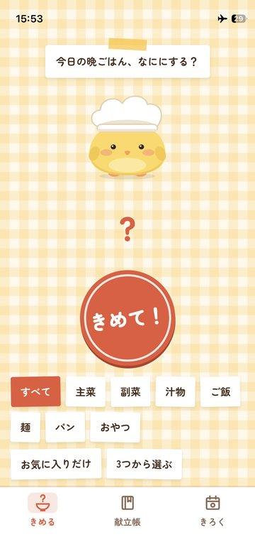
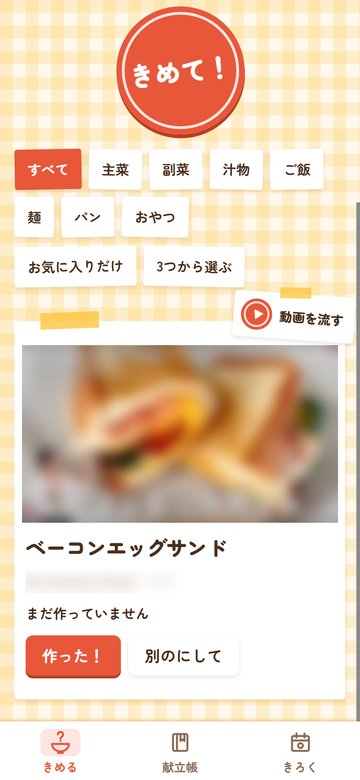
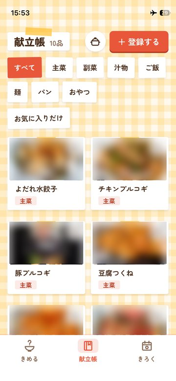
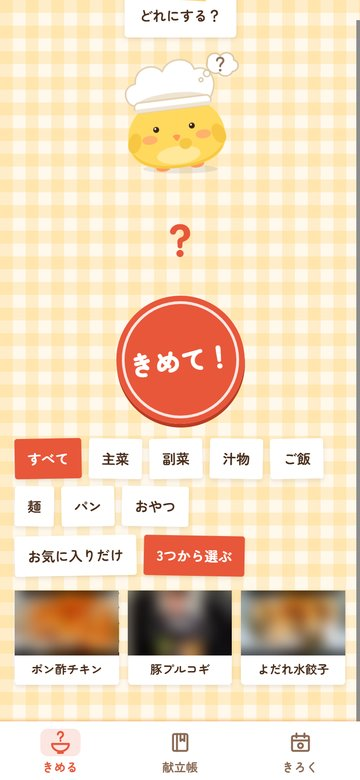
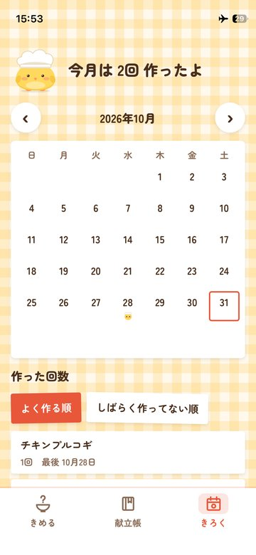
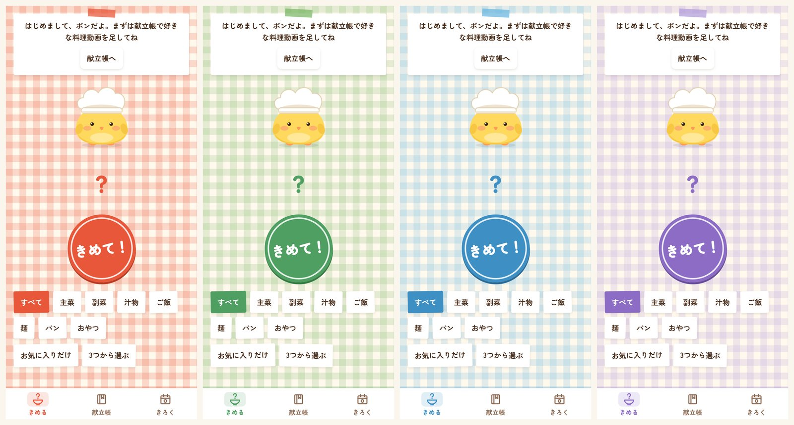

「今日なに作ろう？」をポンにおまかせ：料理動画から献立を決めるアプリ「クックポップ」
こんにちは、maosun です。
YouTube で見つけたおいしそうな料理動画を、「あとで作ろう」と保存したまま忘れていませんか？ 僕はよくあります。
そんな動画を集めておくと、マスコットのポンが今日の献立を決めてくれる iPhone アプリ「クックポップ」を作りました。App Store に出ています。無料で、アカウントの登録もいりません。
App Store：https://apps.apple.com/jp/app/id6826200575
使い方とよくある質問：https://maosun-dev.com/cookpop/


ボタンひとつで献立が決まる
「きめて！」を押すと、ポンが登録した料理の中から1つ選びます。
決まった料理は、カードで出ます。「動画を流す」を押すと、その場で動画が見られます。気分じゃなければ「別のにして」でもう一度選び直せます。


選ぶときには、最近作った料理が出にくくなるようにしてあります。昨日や今日作ったものは、ほかに候補があれば出ません。1週間以内に作ったものは、出やすさが半分になります。同じ料理ばかり続かないようにするためです。
YouTube の共有ボタンで登録
料理の登録は、YouTube アプリからできます。
1. YouTube アプリで料理動画を開く 2. 「共有」を押して、「クックポップ」を選ぶ（並びにないときは「その他」から）
これだけで、題名とサムネイルが自動で入ります。動画のリンクを貼って登録することもできます。
登録した料理は「献立帳」に並びます。


ジャンルとマイタグで絞り込む
料理には、主菜・副菜・汁物・ご飯・麺・パン・おやつの7つのジャンルを付けられます。さらに「時短」「作り置き」のように、自分だけのタグ（マイタグ）も作れます。
「きめて！」を押す前に絞り込めば、「今日は汁物から」「今日は時短で」のように選べます。「お気に入りだけ」から選ぶこともできます。
自分で最後に決めたいときは、「3つから選ぶ」が便利です。ポンが3つ候補を出すので、その中から好きなものを選びます。


作った日はカレンダーに
料理を作ったら、「作った！」を押します。「きろく」のカレンダーに、その日の印が付きます。
カレンダーの下には、料理ごとの作った回数が並びます。「よく作る順」と「しばらく作ってない順」で並べ替えられるので、「最近あれ作ってないな」と思い出すきっかけにもなります。


ふきんの色は6色
画面の地は、ギンガムチェックのふきんです。たまご・トマト・抹茶・ソーダ・いちご・ぶどうの6色から選べます。暗い見た目にもできます。


データは iPhone の中だけ
登録した料理や記録は、あなたの iPhone の中にだけ保存します。サーバーには送りません。
機種変更のときは、設定の「バックアップ」でファイルに書き出して、新しい iPhone で読み込めば元に戻せます。
動画は YouTube の公式の埋め込みプレーヤーで再生します。投稿した人が埋め込みを止めている動画は、「YouTube で開く」から YouTube アプリなどで見られます。画面の上には広告が出ます。
使ってみてください
App Store：https://apps.apple.com/jp/app/id6826200575
今夜の献立に迷ったら、ポンに聞いてみてください！